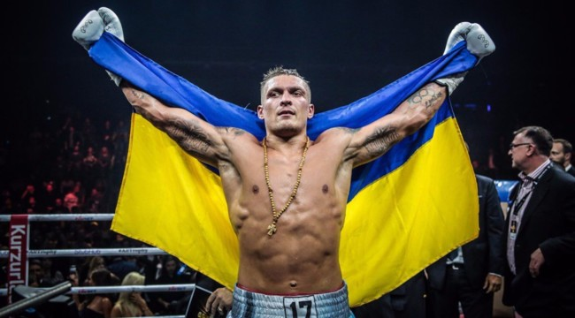
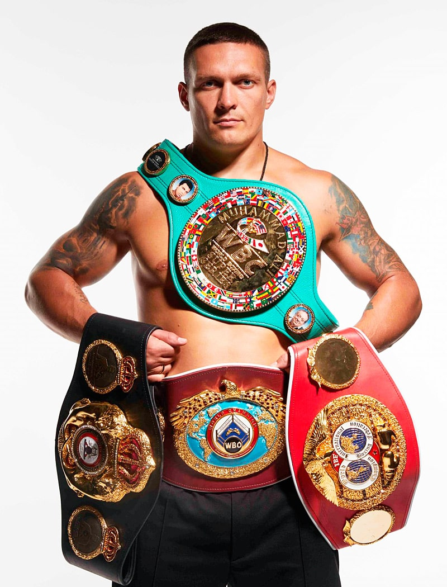

About the athlete
<-

->
Народився в Сімферополі, Кримська область, Українська РСР, нині Автономна республіка Крим, Україна. Батьки родом з півночі України. Мати народилася в Чернігівській області (село Риботин Коропського району), працювала на будівництві. Батько родом із Сумщини, військовий, воював в Афганістані. З дитинства Олександр відвідував школу сімферопольського футбольного клубу «Таврія», але футбольна кар'єра Олександра не склалася. У 15 років почав займатися боксом[12][13]. Хоча батьки Усика були нерелігійними, у віці 10 років прийшов до православ'я під впливом бабусі[13]. Закінчив школу № 34 в Сімферополі (тут навчався разом зі своєю майбутньою дружиною Катериною) та Львівський університет фізичної культури (потім — аспірант цього вишу).
Аматорська кар'єра У 2006 році взяв участь у чемпіонаті Європи з боксу, дійшов до півфіналу, у якому програв росіянину Матвію Коробову у ваговій категорії до 75 кг. Потім Усик перейшов у напівважку вагову категорію і в 2008 році завоював в Болгарії Кубок Стренджа[en]. У лютому 2008 року був відправлений олімпійським комітетом у Розето-дельї-Абруцці, замінивши Дениса Пояцику. Там він переміг боксерів світового класу азербайджанця Ельчина Алізаде й британця Денні Прайса. Узяв участь в Олімпійських іграх 2008 року в Пекіні. У першому турі Олександр із легкістю переміг боксера з Китаю Юйшань Ніцзяті (23:4), а в другому турі програв майбутньому срібному призеру, італійцеві Клементе Руссо (4:7). Після поразки на Олімпіаді Олександр спустився в напівважку вагу й виграв у 2008 році чемпіонат Європи, потім знову перейшов у важку вагову категорію. Узяв срібну медаль на першості Кубка Світу 2008 року. У 2009 році взяв участь у чемпіонаті світу з боксу. Завоював на ньому бронзову медаль, поступившись у півфіналі росіянину Єгору Мехонцеву. У 2011 році на чемпіонаті світу переміг росіянина Артура Бетербієва й у фіналі боксера з Азербайджану Теймура Мамедова, завоювавши золоту медаль.